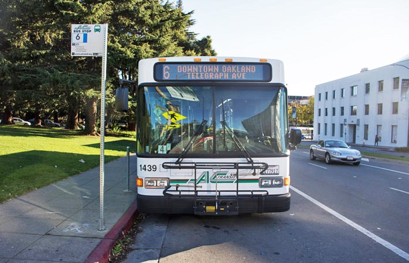

Transit in Berkeley
AC TRANSIT
Part of a Series on Berkeley transit, you may also be looking for:
AC Transit is Berkeley's local bus system. The price is $2.10 per ride and a all-day pass for $5.50. The buses come relatively frequent based on which line you're taking. There are core lines and neighborhood lines. The core lines are cross town routes you'll likely need to get around Berkeley and provide you a shuttle to BART (Bay Area Rapid Transit) if you're trying to travel regionally.
Neighborhood Lines can be found HERE
If you're not accustomed to riding the bus, it may seem daunting at first, but just follow these procedures and you'll be fine
If that's not clear enough, watch this Youtube video!